Streamflow Intermittence In Transient#
[2]:
# -*- coding: utf-8 -*-
"""
* Copyright (c) 2023 Alexandre Gauvain, Ronan Abhervé, Jean-Raynald de Dreuzy
*
* This program and the accompanying materials are made available under the
* terms of the Eclipse Public License 2.0 which is available at
* http://www.eclipse.org/legal/epl-2.0, or the Apache License, Version 2.0
* which is available at https://www.apache.org/licenses/LICENSE-2.0.
*
* SPDX-License-Identifier: EPL-2.0 OR Apache-2.0
"""
[2]:
'\n * Copyright (c) 2023 Alexandre Gauvain, Ronan Abhervé, Jean-Raynald de Dreuzy\n *\n * This program and the accompanying materials are made available under the\n * terms of the Eclipse Public License 2.0 which is available at\n * http://www.eclipse.org/legal/epl-2.0, or the Apache License, Version 2.0\n * which is available at https://www.apache.org/licenses/LICENSE-2.0.\n *\n * SPDX-License-Identifier: EPL-2.0 OR Apache-2.0\n'
[3]:
# Libraries installed by default
import sys
import glob
import os
import pickle
import numpy as np
import pandas as pd
import matplotlib as mpl
import matplotlib.pyplot as plt
import matplotlib.dates as mdates
import imageio
import whitebox
wbt = whitebox.WhiteboxTools()
wbt.verbose = False
import xarray as xr
xr.set_options(keep_attrs = True)
# ROOT DIRECTORY
from os.path import dirname, abspath
try:
root_dir = '/home/bb/Documents/01_Git_Repository/01-HydroModPy-dev'
except NameError:
root_dir = os.getcwd()
sys.path.append(root_dir)
# HYDROMODPY MODULES
from hydromodpy import watershed_root
from hydromodpy.display import visualization_watershed, visualization_results
from hydromodpy.tools import toolbox
fontprop = toolbox.plot_params(8,15,18,20) # small, medium, interm, large
def select_period(df, first, last):
df = df[(df.index.year>=first) & (df.index.year<=last)]
return df
[4]:
example_path = os.path.join(root_dir, "examples", "04_streamflow_intermittence_in_transient/")
data_path = os.path.join(example_path, "data/")
# The folder out_path is created in the example_path root directory:
out_path = os.path.join(root_dir,'examples', 'results')
# Or define it manually
# out_path = 'C:/Simulations/HydroModPy/'
print('The results of the example will be saved here :', out_path)
The results of the example will be saved here : /home/bb/Documents/01_Git_Repository/01-HydroModPy-dev/examples/results
[5]:
dem_path = os.path.join(data_path, 'regional dem.tif')
load = True
watershed_name = 'Example_04_Nancon'
from_lib = None # os.path.join(root_dir,'watershed_library.csv')
from_dem = None # [path, cell size]
from_shp = None # [path, buffer size]
from_xyv = [389285.910, 6816518.749, 150, 10 , 'EPSG:2154'] # [x, y, snap distance, buffer size, crs proj]
bottom_path = None # path
save_object = True
[6]:
print('##### '+watershed_name.upper()+' #####')
BV = watershed_root.Watershed(dem_path=dem_path,
out_path=out_path,
load=load,
watershed_name=watershed_name,
from_lib=from_lib, # os.path.join(root_dir,'watershed_library.csv')
from_dem=from_dem, # [path, cell size]
from_shp=from_shp, # [path, buffer size]
from_xyv=from_xyv, # [x, y, snap distance, buffer size]
bottom_path=bottom_path, # path
save_object=save_object)
# Paths generated automatically but necessary for plots
stable_folder = os.path.join(out_path, watershed_name, 'results_stable')
simulations_folder = os.path.join(out_path, watershed_name, 'results_simulations')
[INFO] __ __ __ __ ____ ________
[INFO] / / / / / / / \/ / / / __ /
[INFO] / /_/ /_ ______/ /________ / /___ ____/ / /_/ /_ __
[INFO] / __ / / / / __ / ___/ __ \/ /\,-/ / __ \/ __ / ____/ / / /
[INFO] / / / / /_/ / /_/ / / / /_/ / / / / /_/ / /_/ / / / /_/ /
[INFO] /_/ /_/\__, /_____/_/ \____/_/ /_/\____/_____/_/____\__, /
[INFO] /____/ Hydrological Modelling in Python /_____________/
[INFO]
[INFO] Python object was successfully loaded as requested; imported from output directory /home/bb/Documents/01_Git_Repository/01-HydroModPy-dev/examples/results/Example_04_Nancon
##### EXAMPLE_04_NANCON #####
[7]:
visualization_watershed.watershed_local(dem_path, BV)
# Clip specific data at the catchment scale
BV.add_geology(data_path, types_obs='GEO1M.shp', fields_obs='CODE_LEG')
BV.add_hydrography(data_path, types_obs=['regional stream network'])
BV.add_hydrometry(data_path, 'france hydrometric stations.shp')
BV.add_intermittency(data_path, 'regional onde stations.shp')
# BV.add_piezometry()
# Extract some subbasin from data available above
BV.add_subbasin(os.path.join(data_path, 'additional'), 150)
# General plot of the study site
visualization_watershed.watershed_geology(BV)
visualization_watershed.watershed_dem(BV)
[INFO] Extracting geology data from /home/bb/Documents/01_Git_Repository/01-HydroModPy-dev/examples/04_streamflow_intermittence_in_transient/data/
[INFO] Extracting hydrography data from /home/bb/Documents/01_Git_Repository/01-HydroModPy-dev/examples/04_streamflow_intermittence_in_transient/data/
[INFO] Extracting hydrometry data from /home/bb/Documents/01_Git_Repository/01-HydroModPy-dev/examples/04_streamflow_intermittence_in_transient/data/
[INFO] Extracting stream intermittency data from /home/bb/Documents/01_Git_Repository/01-HydroModPy-dev/examples/04_streamflow_intermittence_in_transient/data/
[INFO] Extracting subbasin definitions for watershed
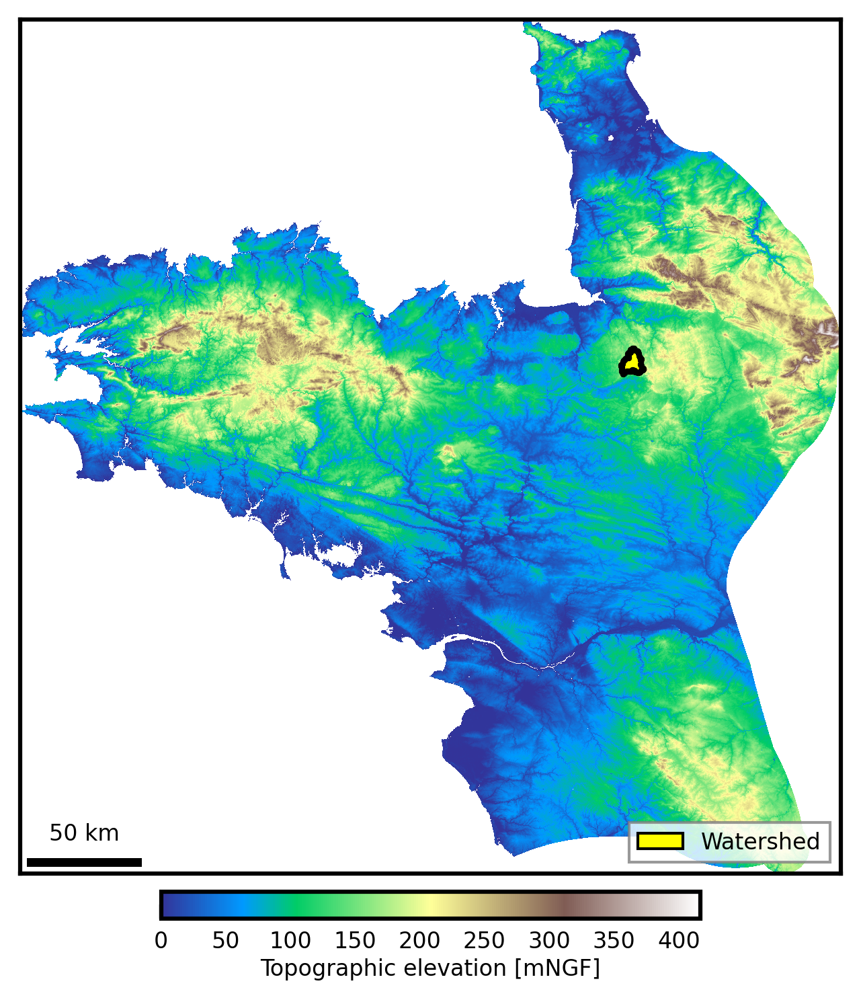
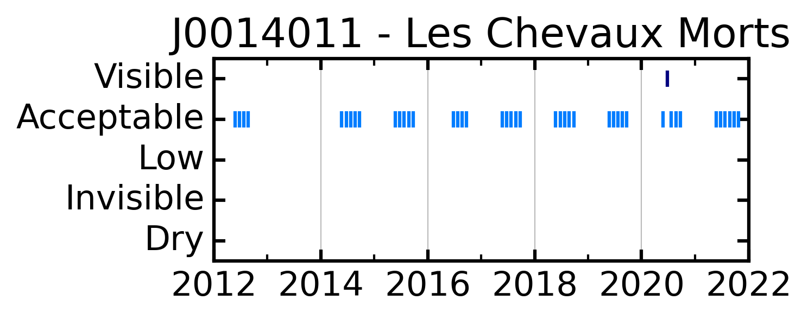
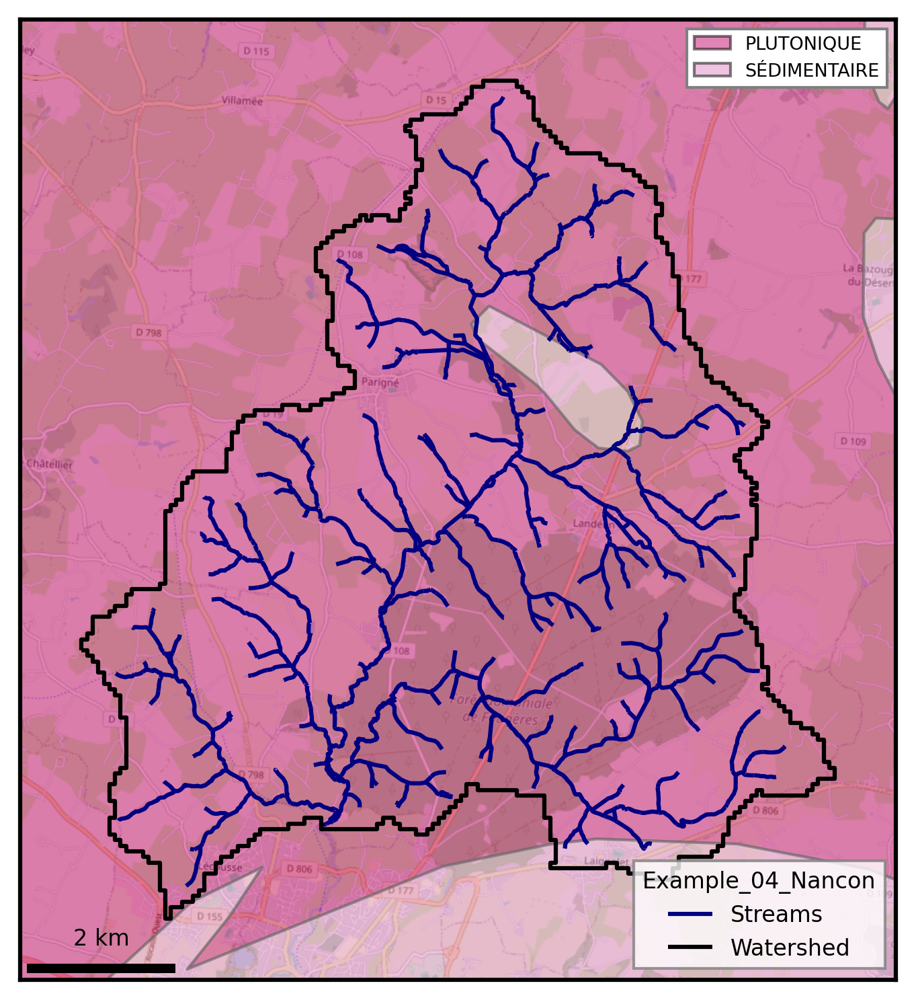
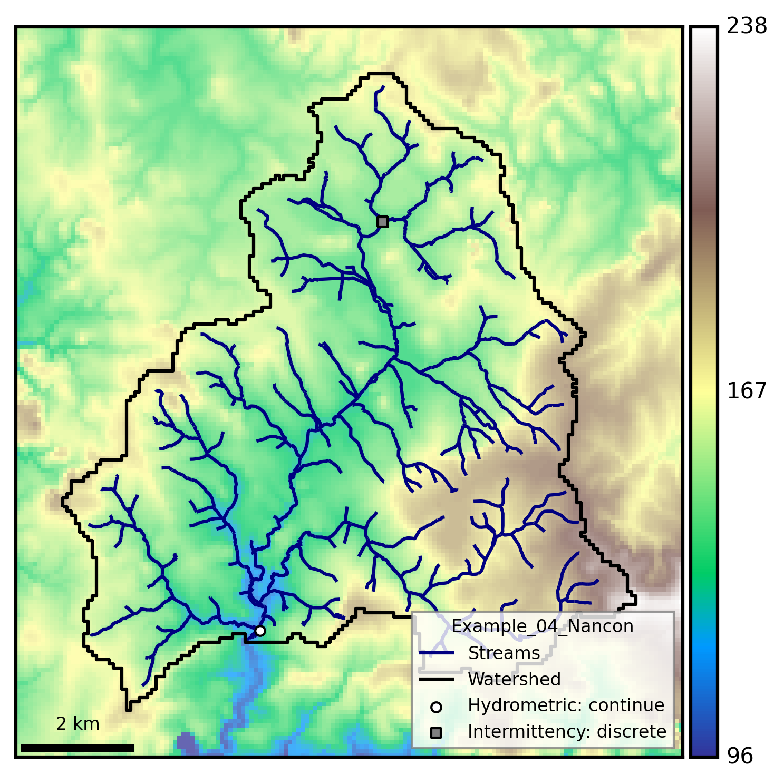
[ ]:
# Necessary to set model parameters
BV.add_climatic()
# clim_data_mode = 'local' # local climatic data
clim_data_mode = 'SIM2' # SIM2 online climatic data (https://meteo.data.gouv.fr/datasets/6569b27598256cc583c917a7)
if clim_data_mode == 'SIM2':
BV.climatic.update_sim2_reanalysis(var_list=['recharge', 'runoff',
],
nc_data_path=os.path.join(
stable_folder,
'add_data',
'climatic'),
first_year=2000,
last_year=2002,
time_step='M',
sim_state='transient',
spatial_mean=True,
geographic=BV.geographic,
disk_clip='watershed')
### Units
BV.climatic.update_recharge(BV.climatic.recharge / 1000, sim_state='transient') # from mm to m
BV.climatic.update_runoff(BV.climatic.runoff / 1000, sim_state='transient') # from mm to m
### Format for plots
if isinstance(BV.climatic.recharge, float):
print(f"Time-space daily average value for recharge = {BV.climatic.recharge} m")
print(f"Time-space daily average value for runoff = {BV.climatic.runoff} m")
else:
if isinstance(BV.climatic.recharge, xr.core.dataset.Dataset):
R = BV.climatic.recharge.drop('spatial_ref').mean(dim = ['x', 'y']).to_pandas().iloc[:,0]
r = BV.climatic.runoff.drop('spatial_ref').mean(dim = ['x', 'y']).to_pandas().iloc[:,0]
# R = R.resample('M').sum()
# r = r.resample('M').sum()
elif isinstance(BV.climatic.recharge, pd.core.series.Series):
R = BV.climatic.recharge
r = BV.climatic.runoff
elif clim_data_mode == 'local':
x = pd.read_csv(data_path+'/'+'_climate_REANALYSIS.csv', sep=';', index_col=0)
date_object = pd.to_datetime(x.index, format = "%d/%m/%Y")
x.index = date_object
x = x.sort_index()
x = x.resample('M').mean()
x = select_period(x, 2000, 2002)
BV.climatic.update_recharge(x['REC_REA_historic'] / 1000, sim_state='transient') # from mm to m
BV.climatic.update_runoff(x['RUN_REA_historic'] / 1000, sim_state='transient') # from mm to m
R = BV.climatic.recharge
r = BV.climatic.runoff
# Plots
fig, ax = plt.subplots(1,1, figsize=(6,3))
ax.plot(R, label='recharge_reanalysis', c='dodgerblue', lw=2)
ax.plot(r, label='runoff_reanalysis', c='navy', lw=2)
ax.set_xlabel('Date')
ax.set_ylabel('[m/d]')
plt.xticks(rotation=45, ha="right")
ax.legend()
[INFO] Initializing climatic module parameters
[INFO] Extracting SIM2 climatic datasets from remote archives
[INFO] Existing SIM2 CSV datasets already cover requested domain and period
[INFO] Clipping NetCDF files with mask watershed_box
[INFO] Merging DRAINC (recharge) NetCDF files
[INFO] Merging RUNC (runoff) NetCDF files
[INFO] Formatting SIM2 results for HydroModPy
[INFO] Processing SIM2 variable recharge
[INFO] Processing SIM2 variable runoff
<matplotlib.legend.Legend at 0x7f0f5b3dec10>
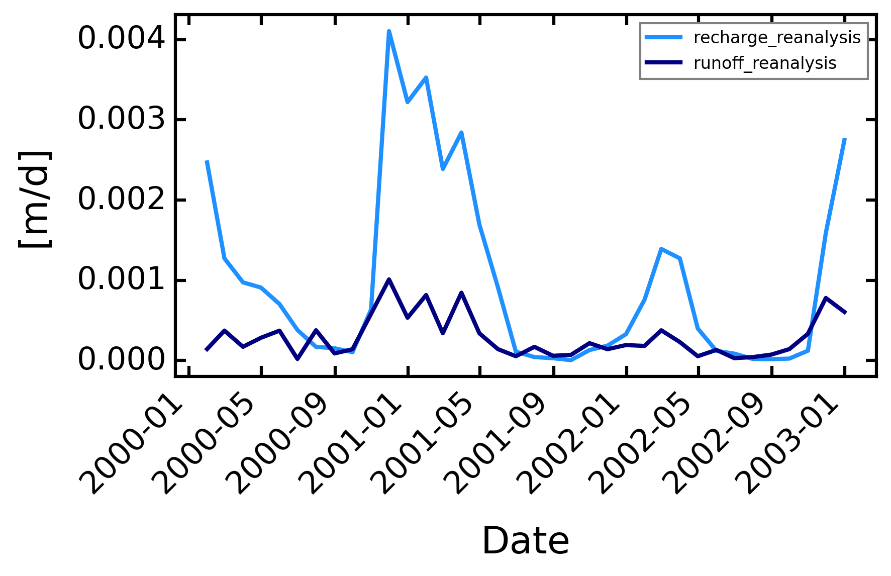
[9]:
# Frame settings
box = True # or False
sink_fill = False # or True
# sim_state = 'transient' # 'steady' or 'transient'
sim_state = 'transient' # 'steady' or 'transient'
plot_cross = False
dis_perlen = True
# Climatic settings
first_clim = 'first' # or 'first or value
freq_time = 'M'
# Hydraulic settings
nlay = 1
lay_decay = 1 # 1 for no decay
bottom = None # elevation in meters, None for constant auifer thickness, or 2D matrix
thick = 30 # if bottom is None, aquifer thickness
hk = 5e-5 * 3600 * 24 # m/day
cond_drain = None # or value of conductance
########## LOOP ##########
list_porosity = np.array([0.1, 5, 30]) / 100 # [-]
# Boundary settings
bc_left = None # or value
bc_right = None # or value
sea_level = 'None' # or value based on specific data : BV.oceanic.MSL
split_temp = True
# Particle tracking settings
zone_partic = 'domain' # or watershed
# plt.plot(hyd_cond/R)
iD_set_simulations = 'explorSy_test1'
[10]:
# Import modules
BV.add_settings()
BV.add_climatic()
BV.add_hydraulic()
# Frame settings
BV.settings.update_box_model(box)
BV.settings.update_sink_fill(sink_fill)
BV.settings.update_simulation_state(sim_state)
BV.settings.update_check_model(plot_cross=plot_cross)
# Climatic settings
recharge = R.copy()
BV.climatic.update_recharge(recharge, sim_state=sim_state)
BV.climatic.update_first_clim(first_clim)
# Hydraulic settings
BV.hydraulic.update_nlay(nlay) # 1
BV.hydraulic.update_lay_decay(lay_decay) # 1
BV.hydraulic.update_bottom(bottom) # None
BV.hydraulic.update_thick(thick) # 30 / intervient pas si bottom != None
BV.hydraulic.update_hk(hk)
BV.hydraulic.update_cond_drain(cond_drain)
# Boundary settings
BV.settings.update_bc_sides(bc_left, bc_right)
BV.add_oceanic(sea_level)
BV.settings.update_dis_perlen(dis_perlen)
# Particle tracking settings
BV.settings.update_input_particles(zone_partic=BV.geographic.watershed_box_buff_dem) # or 'seepage_path'
[INFO] Initializing settings module for groundwater parameters
[INFO] Initializing climatic module parameters
[INFO] Initializing hydraulic module for parameter setup
[ ]:
list_model_name = []
list_success_modflow = []
list_model_modflow = []
for i, sy in enumerate(list_porosity[:]):
BV.hydraulic.update_sy(sy)
model_name = iD_set_simulations+'_'+str(i)+'_'+str(round(sy,3))
BV.settings.update_model_name(model_name)
print(model_name)
model_modflow = BV.preprocessing_modflow(for_calib=False)
success_modflow = BV.processing_modflow(model_modflow, write_model=True, run_model=True)
list_model_name.append(model_name)
list_success_modflow.append(success_modflow)
list_model_modflow.append(model_modflow)
dictio = {}
dictio['list_model_name'] = list_model_name
dictio['list_success_modflow'] = list_success_modflow
dictio['list_model_modflow'] = list_model_modflow
pickle_file = os.path.join(simulations_folder, 'results_listing_'+iD_set_simulations+'.pkl')
with open(pickle_file, 'wb') as f:
pickle.dump(dictio, f)
[INFO] MODFLOW grid connectivity check passed
explorSy_test1_0_0.001
FloPy is using the following executable to run the model: ../../../../../bin/linux/mfnwt
MODFLOW-NWT-SWR1
U.S. GEOLOGICAL SURVEY MODULAR FINITE-DIFFERENCE GROUNDWATER-FLOW MODEL
WITH NEWTON FORMULATION
Version 1.3.0 07/01/2022
BASED ON MODFLOW-2005 Version 1.12.0 02/03/2017
SWR1 Version 1.05.0 03/10/2022
Using NAME file: explorSy_test1_0_0.001.nam
Run start date and time (yyyy/mm/dd hh:mm:ss): 2025/11/12 1:45:03
Solving: Stress period: 1 Time step: 1 Groundwater-Flow Eqn.
Solving: Stress period: 2 Time step: 1 Groundwater-Flow Eqn.
Solving: Stress period: 3 Time step: 1 Groundwater-Flow Eqn.
Solving: Stress period: 4 Time step: 1 Groundwater-Flow Eqn.
Solving: Stress period: 5 Time step: 1 Groundwater-Flow Eqn.
Solving: Stress period: 6 Time step: 1 Groundwater-Flow Eqn.
Solving: Stress period: 7 Time step: 1 Groundwater-Flow Eqn.
Solving: Stress period: 8 Time step: 1 Groundwater-Flow Eqn.
Solving: Stress period: 9 Time step: 1 Groundwater-Flow Eqn.
Solving: Stress period: 10 Time step: 1 Groundwater-Flow Eqn.
Solving: Stress period: 11 Time step: 1 Groundwater-Flow Eqn.
Solving: Stress period: 12 Time step: 1 Groundwater-Flow Eqn.
Solving: Stress period: 13 Time step: 1 Groundwater-Flow Eqn.
Solving: Stress period: 14 Time step: 1 Groundwater-Flow Eqn.
Solving: Stress period: 15 Time step: 1 Groundwater-Flow Eqn.
Solving: Stress period: 16 Time step: 1 Groundwater-Flow Eqn.
Solving: Stress period: 17 Time step: 1 Groundwater-Flow Eqn.
Solving: Stress period: 18 Time step: 1 Groundwater-Flow Eqn.
Solving: Stress period: 19 Time step: 1 Groundwater-Flow Eqn.
Solving: Stress period: 20 Time step: 1 Groundwater-Flow Eqn.
Solving: Stress period: 21 Time step: 1 Groundwater-Flow Eqn.
Solving: Stress period: 22 Time step: 1 Groundwater-Flow Eqn.
Solving: Stress period: 23 Time step: 1 Groundwater-Flow Eqn.
Solving: Stress period: 24 Time step: 1 Groundwater-Flow Eqn.
Solving: Stress period: 25 Time step: 1 Groundwater-Flow Eqn.
Solving: Stress period: 26 Time step: 1 Groundwater-Flow Eqn.
Solving: Stress period: 27 Time step: 1 Groundwater-Flow Eqn.
Solving: Stress period: 28 Time step: 1 Groundwater-Flow Eqn.
Solving: Stress period: 29 Time step: 1 Groundwater-Flow Eqn.
Solving: Stress period: 30 Time step: 1 Groundwater-Flow Eqn.
Solving: Stress period: 31 Time step: 1 Groundwater-Flow Eqn.
Solving: Stress period: 32 Time step: 1 Groundwater-Flow Eqn.
Solving: Stress period: 33 Time step: 1 Groundwater-Flow Eqn.
Solving: Stress period: 34 Time step: 1 Groundwater-Flow Eqn.
Solving: Stress period: 35 Time step: 1 Groundwater-Flow Eqn.
Solving: Stress period: 36 Time step: 1 Groundwater-Flow Eqn.
Run end date and time (yyyy/mm/dd hh:mm:ss): 2025/11/12 1:46:00
Elapsed run time: 57.412 Seconds
Normal termination of simulation
explorSy_test1_1_0.05
[INFO] MODFLOW grid connectivity check passed
FloPy is using the following executable to run the model: ../../../../../bin/linux/mfnwt
MODFLOW-NWT-SWR1
U.S. GEOLOGICAL SURVEY MODULAR FINITE-DIFFERENCE GROUNDWATER-FLOW MODEL
WITH NEWTON FORMULATION
Version 1.3.0 07/01/2022
BASED ON MODFLOW-2005 Version 1.12.0 02/03/2017
SWR1 Version 1.05.0 03/10/2022
Using NAME file: explorSy_test1_1_0.05.nam
Run start date and time (yyyy/mm/dd hh:mm:ss): 2025/11/12 1:46:01
Solving: Stress period: 1 Time step: 1 Groundwater-Flow Eqn.
Solving: Stress period: 2 Time step: 1 Groundwater-Flow Eqn.
Solving: Stress period: 3 Time step: 1 Groundwater-Flow Eqn.
Solving: Stress period: 4 Time step: 1 Groundwater-Flow Eqn.
Solving: Stress period: 5 Time step: 1 Groundwater-Flow Eqn.
Solving: Stress period: 6 Time step: 1 Groundwater-Flow Eqn.
Solving: Stress period: 7 Time step: 1 Groundwater-Flow Eqn.
Solving: Stress period: 8 Time step: 1 Groundwater-Flow Eqn.
Solving: Stress period: 9 Time step: 1 Groundwater-Flow Eqn.
Solving: Stress period: 10 Time step: 1 Groundwater-Flow Eqn.
Solving: Stress period: 11 Time step: 1 Groundwater-Flow Eqn.
Solving: Stress period: 12 Time step: 1 Groundwater-Flow Eqn.
Solving: Stress period: 13 Time step: 1 Groundwater-Flow Eqn.
Solving: Stress period: 14 Time step: 1 Groundwater-Flow Eqn.
Solving: Stress period: 15 Time step: 1 Groundwater-Flow Eqn.
Solving: Stress period: 16 Time step: 1 Groundwater-Flow Eqn.
Solving: Stress period: 17 Time step: 1 Groundwater-Flow Eqn.
Solving: Stress period: 18 Time step: 1 Groundwater-Flow Eqn.
Solving: Stress period: 19 Time step: 1 Groundwater-Flow Eqn.
Solving: Stress period: 20 Time step: 1 Groundwater-Flow Eqn.
Solving: Stress period: 21 Time step: 1 Groundwater-Flow Eqn.
Solving: Stress period: 22 Time step: 1 Groundwater-Flow Eqn.
Solving: Stress period: 23 Time step: 1 Groundwater-Flow Eqn.
Solving: Stress period: 24 Time step: 1 Groundwater-Flow Eqn.
Solving: Stress period: 25 Time step: 1 Groundwater-Flow Eqn.
Solving: Stress period: 26 Time step: 1 Groundwater-Flow Eqn.
Solving: Stress period: 27 Time step: 1 Groundwater-Flow Eqn.
Solving: Stress period: 28 Time step: 1 Groundwater-Flow Eqn.
Solving: Stress period: 29 Time step: 1 Groundwater-Flow Eqn.
Solving: Stress period: 30 Time step: 1 Groundwater-Flow Eqn.
Solving: Stress period: 31 Time step: 1 Groundwater-Flow Eqn.
Solving: Stress period: 32 Time step: 1 Groundwater-Flow Eqn.
Solving: Stress period: 33 Time step: 1 Groundwater-Flow Eqn.
Solving: Stress period: 34 Time step: 1 Groundwater-Flow Eqn.
Solving: Stress period: 35 Time step: 1 Groundwater-Flow Eqn.
Solving: Stress period: 36 Time step: 1 Groundwater-Flow Eqn.
Run end date and time (yyyy/mm/dd hh:mm:ss): 2025/11/12 1:46:09
Elapsed run time: 8.772 Seconds
Normal termination of simulation
explorSy_test1_2_0.3
[INFO] MODFLOW grid connectivity check passed
FloPy is using the following executable to run the model: ../../../../../bin/linux/mfnwt
MODFLOW-NWT-SWR1
U.S. GEOLOGICAL SURVEY MODULAR FINITE-DIFFERENCE GROUNDWATER-FLOW MODEL
WITH NEWTON FORMULATION
Version 1.3.0 07/01/2022
BASED ON MODFLOW-2005 Version 1.12.0 02/03/2017
SWR1 Version 1.05.0 03/10/2022
Using NAME file: explorSy_test1_2_0.3.nam
Run start date and time (yyyy/mm/dd hh:mm:ss): 2025/11/12 1:46:10
Solving: Stress period: 1 Time step: 1 Groundwater-Flow Eqn.
Solving: Stress period: 2 Time step: 1 Groundwater-Flow Eqn.
Solving: Stress period: 3 Time step: 1 Groundwater-Flow Eqn.
Solving: Stress period: 4 Time step: 1 Groundwater-Flow Eqn.
Solving: Stress period: 5 Time step: 1 Groundwater-Flow Eqn.
Solving: Stress period: 6 Time step: 1 Groundwater-Flow Eqn.
Solving: Stress period: 7 Time step: 1 Groundwater-Flow Eqn.
Solving: Stress period: 8 Time step: 1 Groundwater-Flow Eqn.
Solving: Stress period: 9 Time step: 1 Groundwater-Flow Eqn.
Solving: Stress period: 10 Time step: 1 Groundwater-Flow Eqn.
Solving: Stress period: 11 Time step: 1 Groundwater-Flow Eqn.
Solving: Stress period: 12 Time step: 1 Groundwater-Flow Eqn.
Solving: Stress period: 13 Time step: 1 Groundwater-Flow Eqn.
Solving: Stress period: 14 Time step: 1 Groundwater-Flow Eqn.
Solving: Stress period: 15 Time step: 1 Groundwater-Flow Eqn.
Solving: Stress period: 16 Time step: 1 Groundwater-Flow Eqn.
Solving: Stress period: 17 Time step: 1 Groundwater-Flow Eqn.
Solving: Stress period: 18 Time step: 1 Groundwater-Flow Eqn.
Solving: Stress period: 19 Time step: 1 Groundwater-Flow Eqn.
Solving: Stress period: 20 Time step: 1 Groundwater-Flow Eqn.
Solving: Stress period: 21 Time step: 1 Groundwater-Flow Eqn.
Solving: Stress period: 22 Time step: 1 Groundwater-Flow Eqn.
Solving: Stress period: 23 Time step: 1 Groundwater-Flow Eqn.
Solving: Stress period: 24 Time step: 1 Groundwater-Flow Eqn.
Solving: Stress period: 25 Time step: 1 Groundwater-Flow Eqn.
Solving: Stress period: 26 Time step: 1 Groundwater-Flow Eqn.
Solving: Stress period: 27 Time step: 1 Groundwater-Flow Eqn.
Solving: Stress period: 28 Time step: 1 Groundwater-Flow Eqn.
Solving: Stress period: 29 Time step: 1 Groundwater-Flow Eqn.
Solving: Stress period: 30 Time step: 1 Groundwater-Flow Eqn.
Solving: Stress period: 31 Time step: 1 Groundwater-Flow Eqn.
Solving: Stress period: 32 Time step: 1 Groundwater-Flow Eqn.
Solving: Stress period: 33 Time step: 1 Groundwater-Flow Eqn.
Solving: Stress period: 34 Time step: 1 Groundwater-Flow Eqn.
Solving: Stress period: 35 Time step: 1 Groundwater-Flow Eqn.
Solving: Stress period: 36 Time step: 1 Groundwater-Flow Eqn.
Run end date and time (yyyy/mm/dd hh:mm:ss): 2025/11/12 1:46:14
Elapsed run time: 4.617 Seconds
Normal termination of simulation
[12]:
iD_set_simulations = 'explorSy_test1'
pickle_file = os.path.join(simulations_folder, 'results_listing_'+iD_set_simulations+'.pkl')
with open(pickle_file, 'rb') as f:
d = pickle.load(f)
list_model_name = d['list_model_name'][:]
list_success_modflow = d['list_success_modflow'][:]
list_model_modflow = d['list_model_modflow'][:]
[ ]:
# from importlib import reload
# reload(watershed_root)
# reload(modflow)
for model_name, success_modflow, model_modflow in zip(list_model_name,
list_success_modflow,
list_model_modflow):
if success_modflow == True:
BV.postprocessing_modflow(model_modflow,
watertable_elevation = True,
watertable_depth= True,
seepage_areas = True,
outflow_drain = True,
groundwater_flux = True,
groundwater_storage = True,
accumulation_flux = True,
persistency_index=True,
intermittency_monthly=True,
intermittency_daily=False,
export_all_tif = False)
timeseries_results = BV.postprocessing_timeseries(model_modflow=model_modflow,
model_modpath=None,
datetime_format=True,
subbasin_results=True,
intermittency_monthly=True) # or None
netcdf_results = BV.postprocessing_netcdf(model_modflow,
datetime_format=True)
[INFO] Post-processing stress period 1/36
[INFO] Post-processing stress period 2/36
[INFO] Post-processing stress period 3/36
[INFO] Post-processing stress period 4/36
[INFO] Post-processing stress period 5/36
[INFO] Post-processing stress period 6/36
[INFO] Post-processing stress period 7/36
[INFO] Post-processing stress period 8/36
[INFO] Post-processing stress period 9/36
[INFO] Post-processing stress period 10/36
[INFO] Post-processing stress period 11/36
[INFO] Post-processing stress period 12/36
[INFO] Post-processing stress period 13/36
[INFO] Post-processing stress period 14/36
[INFO] Post-processing stress period 15/36
[INFO] Post-processing stress period 16/36
[INFO] Post-processing stress period 17/36
[INFO] Post-processing stress period 18/36
[INFO] Post-processing stress period 19/36
[INFO] Post-processing stress period 20/36
[INFO] Post-processing stress period 21/36
[INFO] Post-processing stress period 22/36
[INFO] Post-processing stress period 23/36
[INFO] Post-processing stress period 24/36
[INFO] Post-processing stress period 25/36
[INFO] Post-processing stress period 26/36
[INFO] Post-processing stress period 27/36
[INFO] Post-processing stress period 28/36
[INFO] Post-processing stress period 29/36
[INFO] Post-processing stress period 30/36
[INFO] Post-processing stress period 31/36
[INFO] Post-processing stress period 32/36
[INFO] Post-processing stress period 33/36
[INFO] Post-processing stress period 34/36
[INFO] Post-processing stress period 35/36
[INFO] Post-processing stress period 36/36
[INFO] Exporting watertable elevation time series
[INFO] Exporting watertable depth time series
[INFO] Exporting seepage areas time series
[INFO] Exporting outflow drain time series
[INFO] Exporting groundwater flux time series
[INFO] Exporting groundwater storage time series
[INFO] Exporting accumulation flux time series
[INFO] Exporting persistency index maps
[INFO] Exporting monthly intermittency maps
[INFO] Exported catchment time series to /home/bb/Documents/01_Git_Repository/01-HydroModPy-dev/examples/results/Example_04_Nancon/results_simulations/explorSy_test1_0_0.001/_postprocess/_timeseries
[INFO] Exported time series for subbasin 1 to /home/bb/Documents/01_Git_Repository/01-HydroModPy-dev/examples/results/Example_04_Nancon/results_simulations/explorSy_test1_0_0.001/_subbasins/hydrometry_J0014010
[INFO] Exported time series for subbasin 2 to /home/bb/Documents/01_Git_Repository/01-HydroModPy-dev/examples/results/Example_04_Nancon/results_simulations/explorSy_test1_0_0.001/_subbasins/subbasin_upstreamA
[INFO] Exported time series for subbasin 3 to /home/bb/Documents/01_Git_Repository/01-HydroModPy-dev/examples/results/Example_04_Nancon/results_simulations/explorSy_test1_0_0.001/_subbasins/intermittency_J0014011
[INFO] Exporting MODFLOW results as NetCDF for model explorSy_test1_0_0.001
[INFO] Post-processing stress period 1/36
[INFO] Post-processing stress period 2/36
[INFO] Post-processing stress period 3/36
[INFO] Post-processing stress period 4/36
[INFO] Post-processing stress period 5/36
[INFO] Post-processing stress period 6/36
[INFO] Post-processing stress period 7/36
[INFO] Post-processing stress period 8/36
[INFO] Post-processing stress period 9/36
[INFO] Post-processing stress period 10/36
[INFO] Post-processing stress period 11/36
[INFO] Post-processing stress period 12/36
[INFO] Post-processing stress period 13/36
[INFO] Post-processing stress period 14/36
[INFO] Post-processing stress period 15/36
[INFO] Post-processing stress period 16/36
[INFO] Post-processing stress period 17/36
[INFO] Post-processing stress period 18/36
[INFO] Post-processing stress period 19/36
[INFO] Post-processing stress period 20/36
[INFO] Post-processing stress period 21/36
[INFO] Post-processing stress period 22/36
[INFO] Post-processing stress period 23/36
[INFO] Post-processing stress period 24/36
[INFO] Post-processing stress period 25/36
[INFO] Post-processing stress period 26/36
[INFO] Post-processing stress period 27/36
[INFO] Post-processing stress period 28/36
[INFO] Post-processing stress period 29/36
[INFO] Post-processing stress period 30/36
[INFO] Post-processing stress period 31/36
[INFO] Post-processing stress period 32/36
[INFO] Post-processing stress period 33/36
[INFO] Post-processing stress period 34/36
[INFO] Post-processing stress period 35/36
[INFO] Post-processing stress period 36/36
[INFO] Exporting watertable elevation time series
[INFO] Exporting watertable depth time series
[INFO] Exporting seepage areas time series
[INFO] Exporting outflow drain time series
[INFO] Exporting groundwater flux time series
[INFO] Exporting groundwater storage time series
[INFO] Exporting accumulation flux time series
[INFO] Exporting persistency index maps
[INFO] Exporting monthly intermittency maps
[INFO] Exported catchment time series to /home/bb/Documents/01_Git_Repository/01-HydroModPy-dev/examples/results/Example_04_Nancon/results_simulations/explorSy_test1_1_0.05/_postprocess/_timeseries
[INFO] Exported time series for subbasin 1 to /home/bb/Documents/01_Git_Repository/01-HydroModPy-dev/examples/results/Example_04_Nancon/results_simulations/explorSy_test1_1_0.05/_subbasins/hydrometry_J0014010
[INFO] Exported time series for subbasin 2 to /home/bb/Documents/01_Git_Repository/01-HydroModPy-dev/examples/results/Example_04_Nancon/results_simulations/explorSy_test1_1_0.05/_subbasins/subbasin_upstreamA
[INFO] Exported time series for subbasin 3 to /home/bb/Documents/01_Git_Repository/01-HydroModPy-dev/examples/results/Example_04_Nancon/results_simulations/explorSy_test1_1_0.05/_subbasins/intermittency_J0014011
[INFO] Exporting MODFLOW results as NetCDF for model explorSy_test1_1_0.05
[INFO] Post-processing stress period 1/36
[INFO] Post-processing stress period 2/36
[INFO] Post-processing stress period 3/36
[INFO] Post-processing stress period 4/36
[INFO] Post-processing stress period 5/36
[INFO] Post-processing stress period 6/36
[INFO] Post-processing stress period 7/36
[INFO] Post-processing stress period 8/36
[INFO] Post-processing stress period 9/36
[INFO] Post-processing stress period 10/36
[INFO] Post-processing stress period 11/36
[INFO] Post-processing stress period 12/36
[INFO] Post-processing stress period 13/36
[INFO] Post-processing stress period 14/36
[INFO] Post-processing stress period 15/36
[INFO] Post-processing stress period 16/36
[INFO] Post-processing stress period 17/36
[INFO] Post-processing stress period 18/36
[INFO] Post-processing stress period 19/36
[INFO] Post-processing stress period 20/36
[INFO] Post-processing stress period 21/36
[INFO] Post-processing stress period 22/36
[INFO] Post-processing stress period 23/36
[INFO] Post-processing stress period 24/36
[INFO] Post-processing stress period 25/36
[INFO] Post-processing stress period 26/36
[INFO] Post-processing stress period 27/36
[INFO] Post-processing stress period 28/36
[INFO] Post-processing stress period 29/36
[INFO] Post-processing stress period 30/36
[INFO] Post-processing stress period 31/36
[INFO] Post-processing stress period 32/36
[INFO] Post-processing stress period 33/36
[INFO] Post-processing stress period 34/36
[INFO] Post-processing stress period 35/36
[INFO] Post-processing stress period 36/36
[INFO] Exporting watertable elevation time series
[INFO] Exporting watertable depth time series
[INFO] Exporting seepage areas time series
[INFO] Exporting outflow drain time series
[INFO] Exporting groundwater flux time series
[INFO] Exporting groundwater storage time series
[INFO] Exporting accumulation flux time series
[INFO] Exporting persistency index maps
[INFO] Exporting monthly intermittency maps
[INFO] Exported catchment time series to /home/bb/Documents/01_Git_Repository/01-HydroModPy-dev/examples/results/Example_04_Nancon/results_simulations/explorSy_test1_2_0.3/_postprocess/_timeseries
[INFO] Exported time series for subbasin 1 to /home/bb/Documents/01_Git_Repository/01-HydroModPy-dev/examples/results/Example_04_Nancon/results_simulations/explorSy_test1_2_0.3/_subbasins/hydrometry_J0014010
[INFO] Exported time series for subbasin 2 to /home/bb/Documents/01_Git_Repository/01-HydroModPy-dev/examples/results/Example_04_Nancon/results_simulations/explorSy_test1_2_0.3/_subbasins/subbasin_upstreamA
[INFO] Exported time series for subbasin 3 to /home/bb/Documents/01_Git_Repository/01-HydroModPy-dev/examples/results/Example_04_Nancon/results_simulations/explorSy_test1_2_0.3/_subbasins/intermittency_J0014011
[INFO] Exporting MODFLOW results as NetCDF for model explorSy_test1_2_0.3
[ ]:
dates = pd.date_range(start='01/01/2000', end='31/12/2002', freq='M')
stable_folder = os.path.join(out_path, watershed_name, 'results_stable') # necessary for plots
simulations_folder = os.path.join(out_path, watershed_name, 'results_simulations')
simul_list = sorted(glob.glob(os.path.join(simulations_folder, iD_set_simulations+'*')),
key=os.path.getmtime)
fig, axs = plt.subplots(3, 1, figsize=(5,10), dpi=300)
axs = axs.ravel()
for i, simul in enumerate(simul_list[:]):
model_name = os.path.split(simul)[-1]
ax = axs[i]
Smod_path = os.path.join(simul, r'_postprocess/_timeseries/_simulated_timeseries.csv')
Smod = pd.read_csv(Smod_path, sep=';', index_col=0, parse_dates=True)
Smod = Smod.reset_index()
argmin = Smod['total_areas'].argmin()
argmax = Smod['total_areas'].argmax()
mask = imageio.imread(os.path.join(stable_folder, 'geographic', 'watershed_dem.tif'))
watertable_elevation = np.load(os.path.join(simulations_folder,
model_name, '_postprocess',
'watertable_elevation'+'.npy'),
allow_pickle=True).item()
min_wt = dict()
cp = 0
for i, key in enumerate([argmin, argmax]):
print(key)
dem_data = imageio.imread(BV.geographic.watershed_dem)
wt_data = watertable_elevation[key]
# river_data = imageio.imread(os.path.join(stable_folder, 'hydrography',
# 'regional stream network.tif'))
xvalues = np.linspace(-1,1,dem_data.shape[1])
yvalues = np.linspace(-1,1,dem_data.shape[0])
xx, yy = np.meshgrid(xvalues,yvalues)
cur_x = dem_data.shape[1] /2
cur_y = dem_data.shape[0] /2 # 39
cur_y = 39
dem_max = dem_data.max()
dem_prof = dem_data.astype(float)
dem_prof[dem_prof<0] = np.nan
wt_prof = wt_data.astype(float)
wt_prof[wt_prof<0] = np.nan
dem_h_plot = dem_prof[int(cur_y),:]
dem_h_plot[dem_h_plot == 0] = np.nan
wt_h_plot = wt_prof[int(cur_y),:]
wt_h_plot[wt_h_plot == 0] = np.nan
dem_max = dem_data.max()
dem_prof = dem_data.astype(float)
dem_prof[dem_prof<0] = np.nan
dem_plot = np.ma.masked_array(dem_data, mask=(dem_data<0))
wt_prof = wt_data.astype(float)
wt_prof[wt_prof<0] = np.nan
cp+=1
if i == 0:
wt_h_fill = ax.fill_between(np.arange(xx.shape[1])*75, dem_h_plot-30, wt_h_plot,
color='navy', alpha=0.5, lw=0)
w_prof = ax.plot(np.arange(xx.shape[1])*75, wt_h_plot, color='navy', lw=1)
if i == 1:
wt_h_fill = ax.fill_between(np.arange(xx.shape[1])*75, dem_h_plot-30, wt_h_plot,
color='dodgerblue', alpha=0.5, lw=0)
w_prof = ax.plot(np.arange(xx.shape[1])*75, wt_h_plot, color='dodgerblue', lw=1)
wt_h_fill = ax.fill_between(np.arange(xx.shape[1])*75, wt_h_plot, dem_h_plot,
color='saddlebrown', alpha=0.5, lw=0)
d_prof = ax.plot(np.arange(xx.shape[1])*75, dem_h_plot, 'saddlebrown', lw=1.5)
ax.fill_between(np.arange(xx.shape[1])*75, 0, dem_h_plot-30,
color='lightgrey', alpha=0.5, lw=0)
ax.plot(np.arange(xx.shape[1])*75, dem_h_plot-30, color='dimgray', lw=1.5)
ax.set_xlim(5500, 8500)
ax.set_ylim(125, 170)
ax.set_yticks([130,140,150,160,170])
ax.set_xlabel('Distance [m]')
ax.set_ylabel('Elevation [m]')
ax.set_title(model_name.upper(), fontsize=8)
if i == 1:
ax.text(0.1, 0.8, 'Max. '+str(dates[key])[:7],
transform=ax.transAxes, color='dodgerblue')
if i == 0:
ax.text(0.1, 0.7, 'Min. '+str(dates[key])[:7],
transform=ax.transAxes, color='navy')
print((str(dates[key])[:7]))
fig.tight_layout
# fig.savefig(os.path.join(simulations_folder, '_figures',
# 'CROSS_'+iD_set_simulations+'.png'),
# bbox_inches='tight')
32
2002-09
10
2000-11
33
2002-10
0
2000-01
33
2002-10
0
2000-01
<bound method Figure.tight_layout of <Figure size 1500x3000 with 3 Axes>>
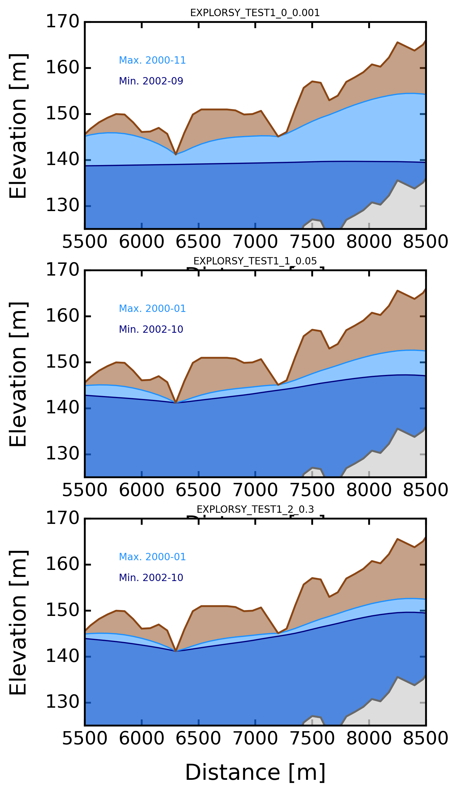
[ ]:
dates = pd.date_range(start='01/01/2000', end='31/12/2002', freq='M')
stable_folder = os.path.join(out_path, watershed_name, 'results_stable') # necessary for plots
simulations_folder = os.path.join(out_path, watershed_name, 'results_simulations')
line = imageio.imread(os.path.join(stable_folder, 'geographic', 'watershed_contour.tif'))
line = np.ma.masked_where(line <= 0, line)
mask = imageio.imread(os.path.join(stable_folder, 'geographic', 'watershed_dem.tif'))
simul_list = sorted(glob.glob(os.path.join(simulations_folder, iD_set_simulations+'*')),
key=os.path.getmtime)
for simul in simul_list[:]:
model_name = os.path.split(simul)[-1]
Smod_path = os.path.join(simul, r'_postprocess/_timeseries/_simulated_timeseries.csv')
Smod = pd.read_csv(Smod_path, sep=';', index_col=0, parse_dates=True)
min_area = Smod['total_areas'].min()
min_idx = np.argmin(Smod['total_areas'])
max_area = Smod['total_areas'].max()
max_idx = np.argmax(Smod['total_areas'])
max_year = Smod['total_areas'].index[max_idx]
acc_npy = np.load(os.path.join(simul, '_postprocess', 'accumulation_flux.npy'), allow_pickle=True).item()
inf = 0
sup = 12
compt = 0
step = int(round(len(acc_npy)/12))
for i in range(step):
print(str(i)+'/'+str(step))
interv = list(acc_npy.items())[inf:sup]
for key in range(len(interv)):
interv[key] = np.ma.masked_array(interv[key][1], mask=(mask<0))
zero = acc_npy[0] * 0
for j in range(len(interv)):
tempo = interv[j].copy()
tempo[tempo>0] = 1
zero = zero + tempo
days_flux = zero.copy()
days_flux = np.ma.masked_array(days_flux, mask=(mask<0))
days_flux = np.ma.masked_array(days_flux, mask=(days_flux<=0))
fig, axs = plt.subplots(1,2, figsize=(7,6))
axs = axs = axs.ravel()
for k, j in enumerate([min_idx, max_idx]):
ax = axs[k]
year = Smod['total_areas'].index[j]
val = Smod.iloc[j]['total_areas']
days_flux = acc_npy[j]
ax.set_title(str(year)[0:10] + ' ' + '$A_{sat}$ = ' + str(val.round(1)) + ' [%]',
pad=10, fontsize=10)
ax.imshow(np.ma.masked_where(mask<0, mask), cmap='Greys', alpha=0.5, zorder=0)
ax.imshow(np.ma.masked_where((days_flux<=0) | (mask <0),
days_flux),
cmap = mpl.colors.ListedColormap(['navy'])) # dodgerblue
ax.imshow(line, cmap=mpl.colors.ListedColormap('k'))
ax.get_xaxis().set_visible(False)
ax.get_yaxis().set_visible(False)
ax.axis('off')
try:
path_sub = os.path.join(glob.glob(
os.path.join(stable_folder, 'subbasin','intermittency*'))[0],
'watershed_contour.shp')
wbt.vector_lines_to_raster(path_sub,
os.path.join(glob.glob(
os.path.join(stable_folder,
'subbasin',
'intermittency*'))[0],
'watershed_contour.tif'),
base = os.path.join(stable_folder,
'geographic',
'watershed_dem.tif'))
line_sub = imageio.imread(os.path.join(glob.glob(
os.path.join(stable_folder, 'subbasin', 'intermittency*'))[0],
'watershed_contour.tif'))
line_sub = np.ma.masked_where(line_sub <= 0, line_sub)
ax.imshow(line_sub, cmap=mpl.colors.ListedColormap('grey'))
except:
pass
fig.suptitle(model_name.upper(), y=0.85, fontsize=8)
fig.tight_layout()
# fig.savefig(os.path.join(simulations_folder, '_figures',
# 'MAPminmax_'+model_name+'.png'),
# bbox_inches='tight')
0/3
1/3
2/3
0/3
1/3
2/3
0/3
1/3
2/3
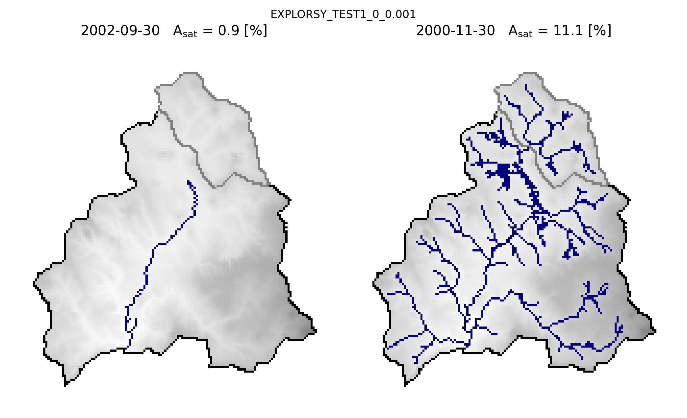
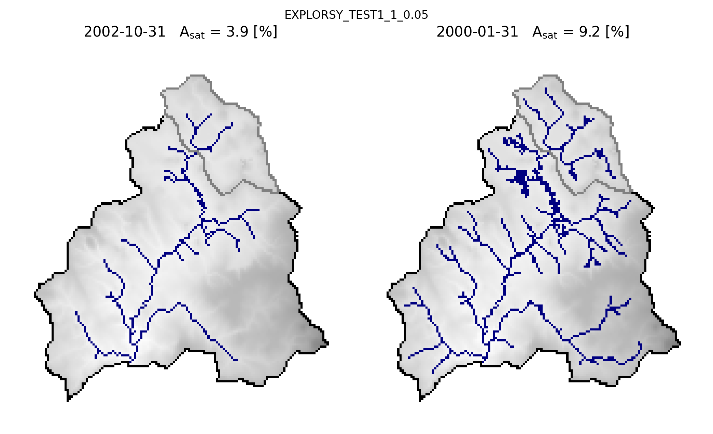
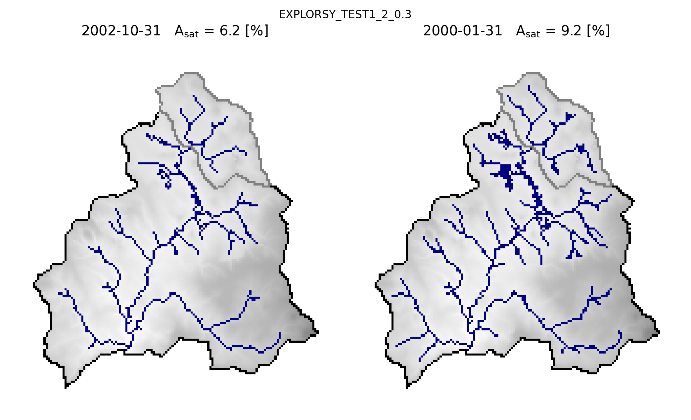
[ ]:
simul_list = sorted(glob.glob(os.path.join(simulations_folder,
iD_set_simulations+'*')),
key=os.path.getmtime)
line = imageio.imread(os.path.join(stable_folder,
'geographic',
'watershed_contour.tif'))
line = np.ma.masked_where(line <= 0, line)
mask = imageio.imread(os.path.join(stable_folder,
'geographic',
'watershed_dem.tif'))
fig, axs = plt.subplots(1, 3, figsize=(7,6))
axs = axs = axs.ravel()
for i, simul in enumerate(simul_list[:]):
model_name = os.path.split(simul)[-1]
ax = axs[i]
pi = imageio.imread(os.path.join(simul, r'_postprocess/_rasters',
'persistency_index_t(-).tif'))
pi = np.ma.masked_where(pi==-9999, pi)
pi = np.ma.masked_where(mask==-99999, pi)
im = ax.imshow(pi, cmap='jet')
ax.imshow(line, mpl.colors.ListedColormap(['k']),
vmin=0, vmax=1)
ax.get_xaxis().set_visible(False)
ax.get_yaxis().set_visible(False)
ax.axis('off')
ax.set_title(model_name.upper(), fontsize=8)
# fig.subplots_adjust(right=0.8)
cbar_ax = fig.add_axes([0.25, 0.25, 0.5, 0.02])
cb = fig.colorbar(im, cax=cbar_ax, orientation="horizontal", pad=0.2)
cb.set_label('Persistency index [-]', fontsize=10) # cax == cb.ax
fig.tight_layout()
fig.tight_layout
# fig.savefig(os.path.join(simulations_folder, '_figures',
# 'PI'+iD_set_simulations+'.png'),
# bbox_inches='tight')
<bound method Figure.tight_layout of <Figure size 2100x1800 with 6 Axes>>
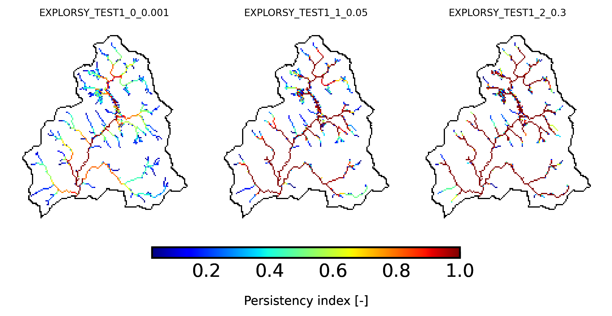
[ ]:
# iD_set_simulations = 'explorSy_mperday_monthly_steady'
# iD_set_simulations = 'explorSy_mperday_monthly_transient'
# iD_set_simulations = 'explorSy_mpermonth_monthly_transient'
# iD_set_simulations = 'explorSy_mpermonth_monthly_steady'
Qobs_path = os.path.join(data_path, 'hydrometry catchment Nancon.csv')
Qobs = pd.read_csv(Qobs_path, sep=';', index_col=0, parse_dates=True)
area = int(round(BV.geographic.area))
Qobs = (Qobs / (area*1000000)) * (3600 * 24) # m3/s to m/day
Qobs = Qobs.resample('M').sum() * 1000 # m/day to mm/month
simul_list = sorted(glob.glob(os.path.join(simulations_folder,
iD_set_simulations+'*')),
key=os.path.getmtime)
for i, simul in enumerate(simul_list[:]):
fig, (a0, a1) = plt.subplots(1, 2, gridspec_kw={'width_ratios': [3, 1]},
figsize=(10,3))
model_name = os.path.split(simul)[-1]
Smod_path = os.path.join(simul,
r'_postprocess/_timeseries/_simulated_timeseries.csv')
Smod = pd.read_csv(Smod_path, sep=';', index_col=0, parse_dates=True)
Qmod = Smod['outflow_drain']
Qmod = Qmod.squeeze() * 1000
Qmod = (Qmod + (r * 1000)) * Qmod.index.day
Rmod = Smod['recharge'] * Qmod.index.day
yearsmaj = mdates.YearLocator(1) # every year
yearsmin = mdates.YearLocator(1)
# monthsmaj = mdates.MonthLocator(6) # every month
# monthsmin = mdates.MonthLocator(3)
# months_fmt = mdates.DateFormatter('%m') #b = name of month ?
years_fmt = mdates.DateFormatter('%Y')
ax = a0
ax.plot(Qobs, color='k', lw=2, ls='-', zorder=0, label='observed')
ax.plot(Qmod, color='red', lw=2, label='modeled')
# ax.plot(Rmod.index, Rmod*1000, color='blue', lw=2.5)
ax.set_xlabel('Date')
ax.set_ylabel('Q / A [mm/month]')
ax.set_yscale('log')
ax.set_ylim(2,200)
ax.xaxis.set_major_locator(yearsmaj)
ax.xaxis.set_minor_locator(yearsmin)
ax.xaxis.set_major_formatter(years_fmt)
ax.set_xlim(pd.to_datetime('1999'), pd.to_datetime('2004'))
ax.legend()
ax.set_title(model_name.upper(), fontsize=10)
axb = ax.twinx()
axb.bar(Rmod.index, Rmod,color='blue', edgecolor='blue', lw=2.5)
axb.set_ylim(0,999)
axb.invert_yaxis()
axb.set_yticklabels([0,200])
Qobs_stat = select_period(Qobs, 2000, 2002)
Qmod_stat = select_period(Qmod, 2000, 2002)
Qmod_stat = pd.DataFrame(Qmod_stat)
Qmod_stat = Qmod_stat.set_index(Qobs_stat.index)
rmse_val, nrmse, nse_val, nselog_val, bal, mare_val, kge_val = toolbox.efficiency_criteria(Qmod_stat, Qobs_stat)
print(model_name.upper())
print(round(nse_val,2))
print(round(nselog_val,2))
print(round(rmse_val,2))
print(round(kge_val,2))
ax = a1
ax.scatter(Qobs_stat, Qmod_stat,
s=25, edgecolor='none', alpha=0.75, facecolor='forestgreen')
ax.set_xscale('log')
ax.set_yscale('log')
ax.plot((0.1,1000),(0.1,1000), color='grey', zorder=-1)
ax.set_xlim(1,500)
ax.set_ylim(1,500)
# ax.set_xlim(0.1,300)
# ax.set_ylim(0.1,300)
ax.set_xlabel('$Q_{obs}$ / A [mm/month]', fontsize=12)
ax.set_ylabel('$Q_{sim}$ / A [mm/month]', fontsize=12)
fig.tight_layout()
# fig.savefig(os.path.join(simulations_folder, '_figures',
# 'STREAMFLOW_'+model_name+'.png'),
# bbox_inches='tight')
EXPLORSY_TEST1_0_0.001
0.61
-0.13
16.35
0.49
EXPLORSY_TEST1_1_0.05
0.88
0.89
9.05
0.88
EXPLORSY_TEST1_2_0.3
0.48
0.14
18.98
0.5
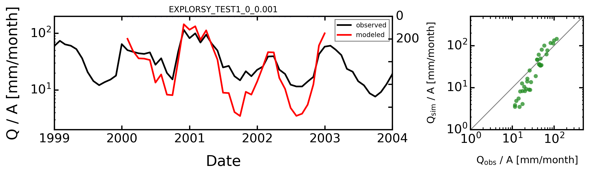
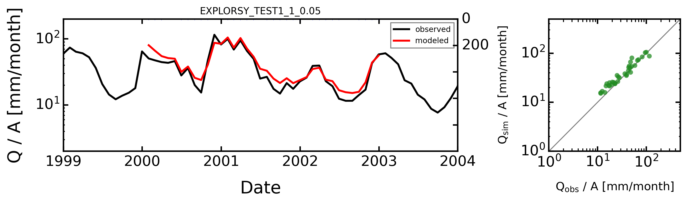
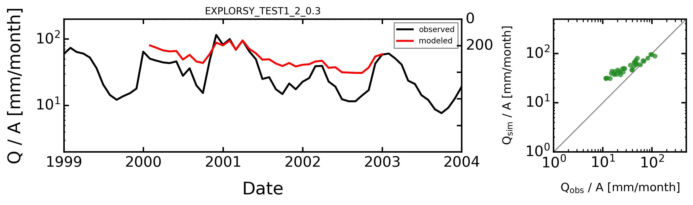
[ ]:
def select_period(df, first, last):
df = df[(df.index.year>=first) & (df.index.year<=last)]
return df
Qobs_path = os.path.join(data_path, 'hydrometry catchment Nancon.csv')
Qobs = pd.read_csv(Qobs_path, sep=';', index_col=0, parse_dates=True)
area = int(round(BV.geographic.area))
Qobs = (Qobs / (area*1000000)) * (3600 * 24) # m3/s to m/day
Qobs = Qobs.resample('M').sum() * 1000 # m/day to mm/month
simul_list = sorted(glob.glob(os.path.join(simulations_folder,
iD_set_simulations+'*')),
key=os.path.getmtime)
for i, simul in enumerate(simul_list[:]):
model_name = os.path.split(simul)[-1]
Smod_path = os.path.join(simul,
r'_postprocess/_timeseries/_simulated_timeseries.csv')
Smod = pd.read_csv(Smod_path, sep=';', index_col=0, parse_dates=True)
Qmod = Smod['outflow_drain']
Qmod = Qmod.squeeze() * 1000
Qmod = Qmod + (r * 1000)
Rmod = Smod['recharge'] * 1000
Sonde_path = os.path.join(glob.glob(
os.path.join(simul, r'_subbasins/intermittency_*'))[0],
'_simulated_timeseries.csv')
Sonde = pd.read_csv(Sonde_path, sep=';', index_col=0, parse_dates=True)
# BV.add_intermittency(data_path, 'regional onde stations.shp')
# d = BV.intermittency.flowing
# assec = d[d==1].dropna()
# invi = d[d==2].dropna()
# low = d[d==3].dropna()
# accep = d[d==4].dropna()
# visib = d[d==5].dropna()
# d = d.resample('M').mean()
# Smod['onde'] = d
from datetime import timedelta
x_months = Smod.index + timedelta(days=-30)
Smod['date'] = x_months
Smod.index = Smod['date']
fig, ax = plt.subplots(1, 1, figsize=(7,3.5))
ax.fill_between(Smod.index, 0, Smod['total_areas'],
interpolate=False, color='dodgerblue', alpha=0.5,
step='pre', label='Intermittent part')
ax.fill_between(Smod.index, 0, Smod['perenn_areas'],
interpolate=False, color='navy', alpha=0.5,
step='pre', label='Perennial part')
ax.legend()
ax.step(Smod.index, Smod['total_areas'], color='dodgerblue',
marker=None, markeredgecolor='none',
markersize=5, lw=1, label='upstream',
where='pre')
ax.step(Smod.index, Smod['perenn_areas'], color='navy',
marker=None, markeredgecolor='none',
markersize=5, lw=1, label='upstream',
where='pre')
ax.set_ylim(-0,12)
# ax.set_yticks(np.arange(0,15.05,2.5))
ax.set_ylabel('Drainge density [%]')
ax.set_xlim(pd.to_datetime('2000-01'), pd.to_datetime('2002-12'))
plt.xticks(rotation=0, ha="right")
years_maj = mdates.YearLocator() # every year
months_maj = mdates.MonthLocator() # every x month
ax.xaxis.set_major_locator(years_maj)
ax.xaxis.set_minor_locator(months_maj)
ax.set_title(model_name.upper(), fontsize=10)
fig.tight_layout()
# fig.savefig(os.path.join(simulations_folder, '_figures',
# 'SATURATION_'+model_name+'.png'),
# bbox_inches='tight')
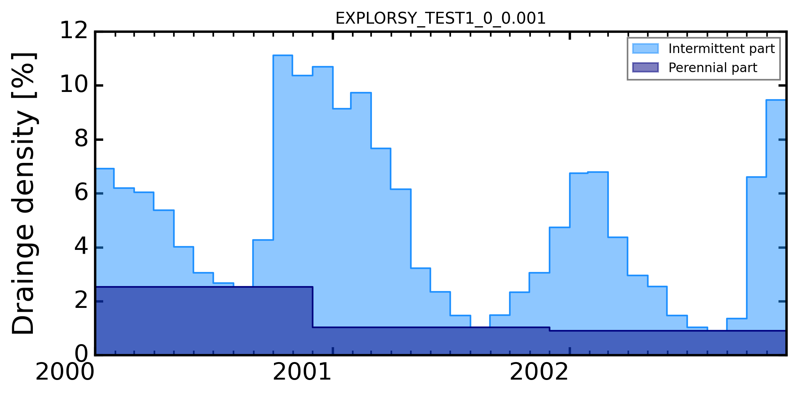
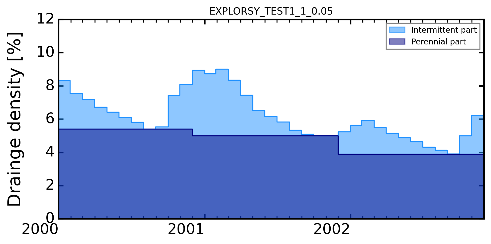
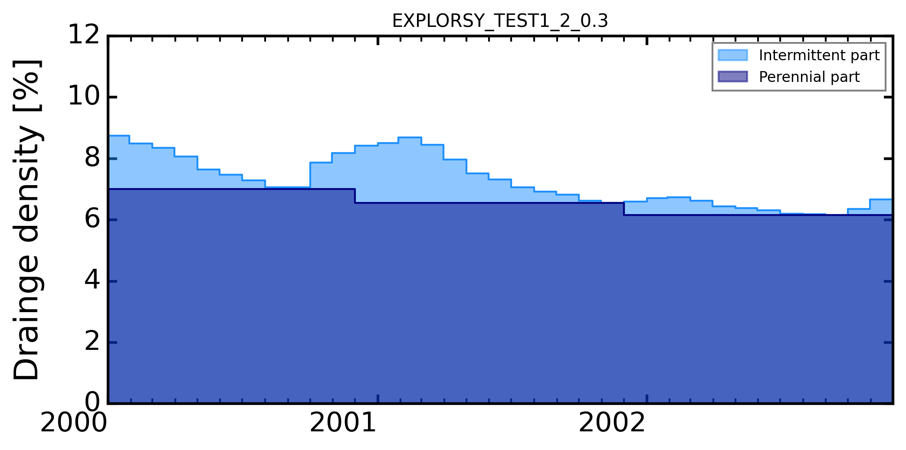
[19]:
os.chdir(root_dir)